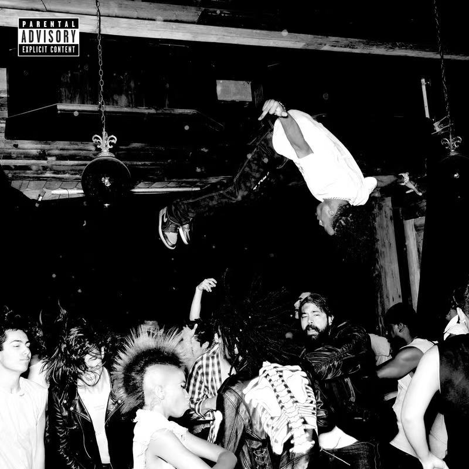
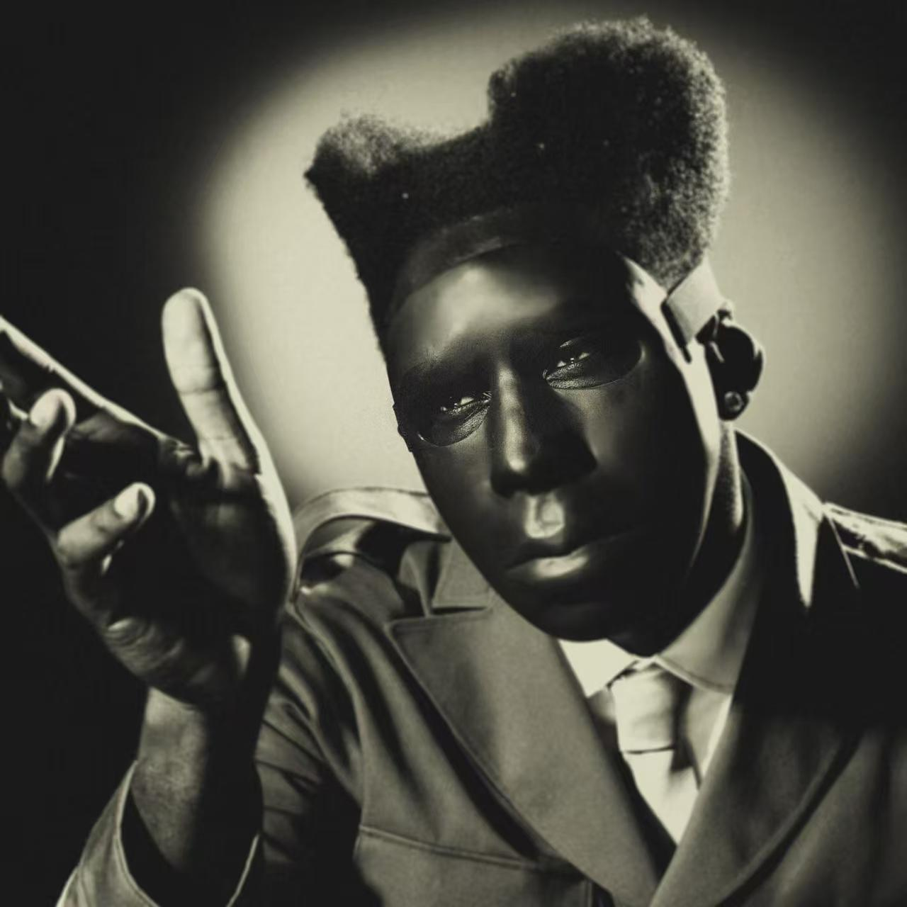
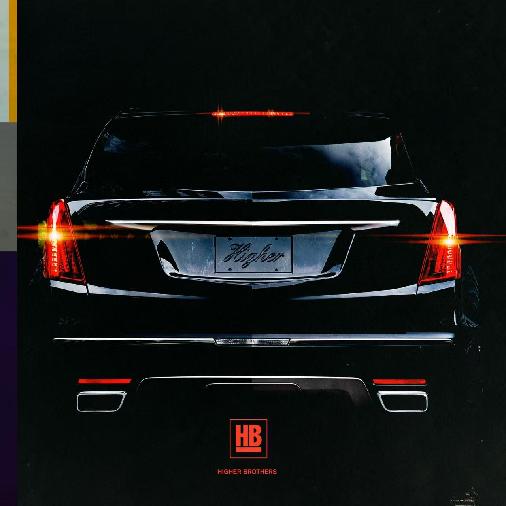

Die Lit
黑白纪实镜头定格地下朋克派对肆意狂欢的瞬间，人群上空腾空翻转的少年瞬间点燃整张专辑松弛癫狂的底色，这是 Playboi Carti 的《Die Lit》，曲风以迷幻陷阱说唱、Cloud Rap 为主，糅合地下朋克随性不羁的氛围。这张 2018 年发行的专辑是 Carti 风格定型的关键作品，由长期搭档 Pierre Bourne 全程操刀制作，褪去硬核失真的激进表达，转而用轻盈漂浮的编曲还原地下派对松弛放纵的玩乐氛围，和后续狂躁朋克风的《Whole Lotta Red》形成鲜明区分。曲目旋律轻盈悬浮，自带朦胧迷幻的漂浮感，节奏慵懒顺滑没有压迫感；编曲大量使用软糯 808 贝斯、细碎空灵的合成器音色，层次柔和朦胧，充斥氛围感音效；Carti 标志性慵懒含糊的哼唱唱腔贯穿全专，咬字随性散漫，自带漫不经心的少年气；歌词围绕派对、玩乐、街头随性日常展开，直白轻快，满是无忧无虑的松弛感。它跳出传统陷阱说唱的凶狠框架，用漂浮朦胧的迷幻声响复刻地下聚会自在放空的状态，在一众硬核说唱作品里拥有独一份慵懒随性的松弛气质。适合夜晚和朋友小聚或是独自放空发呆时循环聆听，如果你厌倦厚重嘈杂的攻击性说唱，偏爱轻飘飘、氛围感十足的迷幻陷阱，这张专辑会带你坠入一场不用紧绷神经的松弛听觉派对。

Chromakopia
高对比度复古黑白肖像自带强烈戏剧张力，造型怪诞又充满复古先锋气质，这是 Tyler, the Creator 的专辑《Chromakopia》，曲风融合另类说唱、灵魂乐、实验流行与复古放克。这张作品是他音乐创作思路走向完全成熟的标志性专辑，他包揽词曲、编曲与全程制作，摒弃以往外放狂躁的表达，大量借用 70 年代复古灵魂乐、爵士器乐，用细腻柔和的音色探讨身份、自我和解、创伤与成长，是跳出传统陷阱说唱框架的深度实验之作。专辑旋律舒缓婉转，复古和弦自带温润怀旧的氛围感，节奏轻重起伏贴合情绪流转；编曲糅合柔和管乐、温润钢琴、松弛贝斯与细腻和声，层次细腻饱满，弱化尖锐失真音效；Tyler 的演唱切换自如，时而低语叙事，时而温柔吟唱，褪去往日尖锐攻击性，多了沉淀后的柔软；歌词直面自我身份焦虑、过往伤痛与内心和解，叙事细腻深刻，充满私人化的情绪独白。它打破大众对另类说唱粗犷张扬的固有印象，用复古温柔的器乐包裹厚重的内心思索，在一众流水线说唱作品里拥有独一无二的细腻与深度。适合安静独处、深夜复盘自我心绪时完整聆听，如果你厌倦流于表面的宣泄式说唱，想要一张兼具复古质感、深度内心叙事的实验说唱专辑，这张作品会带你走入创作者藏在怪诞外壳下柔软厚重的精神世界。

Black Cab
纯黑背景里亮着尾灯的黑色凯迪拉克车尾自带街头冷峻气场，牌照上手写的 Higher 与底部 HB 标识点明归属，这是 Higher Brothers 更高兄弟的首张正式全长专辑《Black Cab》，曲风以中文陷阱说唱为主，融合旋律说唱、东岸嘻哈与国际潮流 Trap 元素。这张 2017 年发行的作品是中文说唱走向海外市场的里程碑，由 88rising 统筹制作，四位成都本土说唱歌手马思唯、PSY.P、KnowKnow、Melo 全程参与词曲创作，以 "黑车" 隐喻底层青年奔赴理想的奔波路途，将川渝方言、街头生活叙事与国际化陷阱编曲结合，凭借《Made in China》让中文说唱真正打入欧美主流嘻哈圈层。专辑旋律线条兼具硬朗冲击与顺滑旋律感，快慢曲目搭配均衡；编曲大量运用厚重 808 贝斯、细碎电子鼓组与氛围感合成器，兼顾地下粗糙质感与精致商业混音；四位成员声线特质区分鲜明，马思唯流畅旋律唱腔、PSY.P 低沉叙事、KnowKnow 慵懒腔调、Melo 锐利快嘴形成丰富听觉层次；歌词聚焦川渝街头日常、追梦挣扎、文化自信与青年野心，方言俚语与英文 flow 自然融合，直白鲜活又充满本土特色。它打破了海外对中文说唱的刻板印象，把本土街头叙事与国际陷阱潮流完美融合，是中文 Trap 无法绕开的标志性专辑。适合夜间兜风、聚会放松时完整循环，如果你想感受兼具本土烟火气与国际制作水准的中文陷阱说唱，这张专辑会带你领略川渝嘻哈独有的松弛与锋芒。